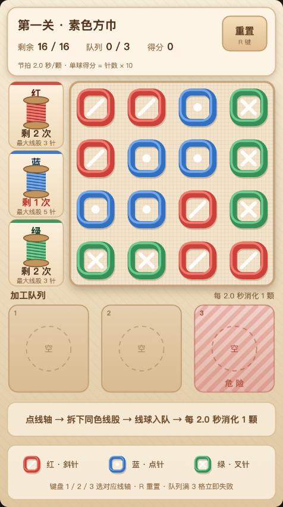
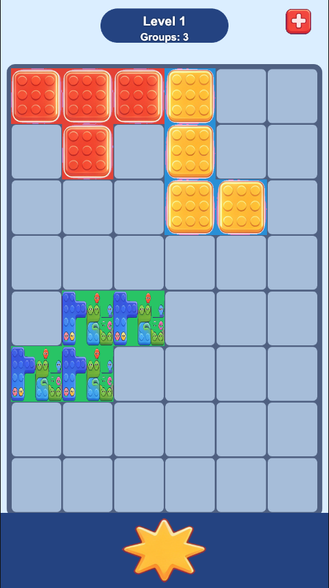
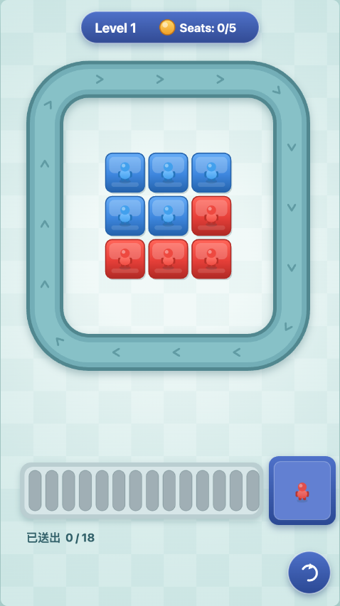
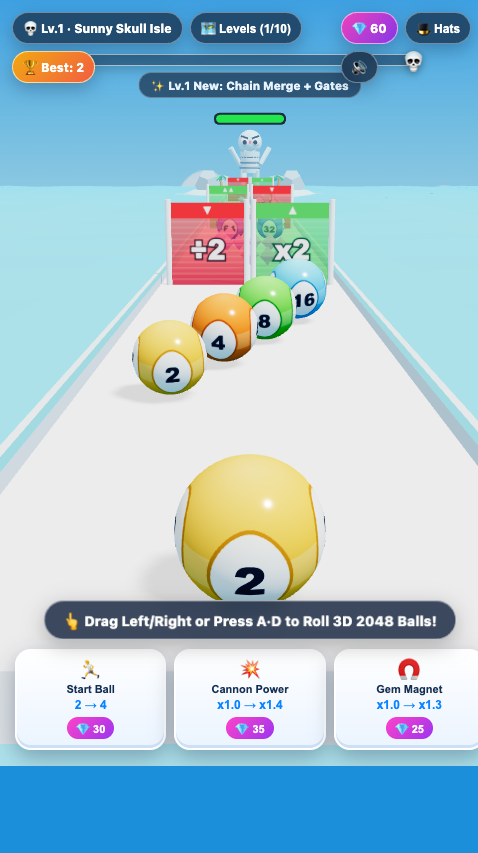

核心玩法原型精选，浏览器直接玩，无需下载。

点同色线轴把针织图案上的针脚拆成线球，送进 3 格加工队列自动消化。队列满或线轴用完即败。

在马赛克棋盘里点选同色的俄罗斯方块人群组，整组滑出进入底部巴士格撤离。

点休息区座位上的同色通勤者组，送上环形传送带送往出口闸口，座位容量上限 5。

在怪物岛上滚动 3D 数字球：左右拖动穿过 ×2 / ÷2 门，或撞上同数字球合成翻倍，一路合成到 2048；抵达终点后用加农炮瞄准海怪弱点开火，10 关锯齿难度战役。